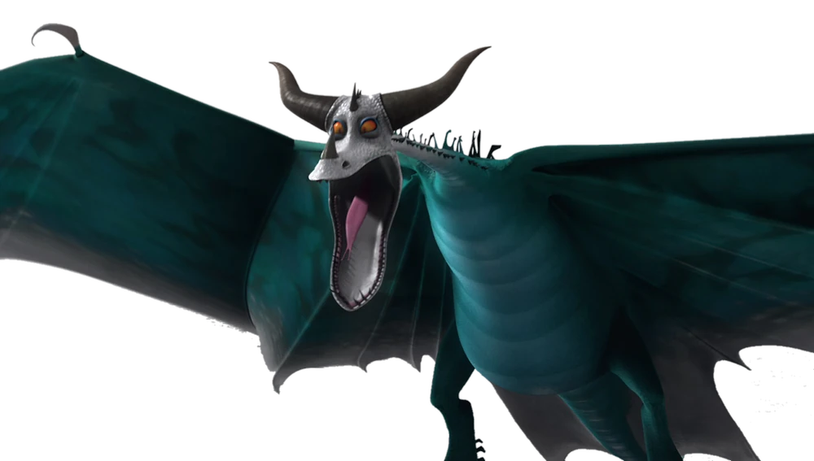

Le dragon au venin paralysant
| Catégorie | Mystérieux |
| Type de feu | Gaz toxique paralysant |
| Taille | 7 mètres |
| Envergure | 11 mètres |
| Poids | 500 kg |
| Couleur | Violet, noir |
| Apprivoisable | Oui |
Le Typhonmrang est un dragon mystérieux dont le souffle contient un gaz toxique paralysant. Ses victimes sont immobilisées puis vulnérables à ses attaques. Ce dragon use de ruse plus que de force brute, préférant neutraliser ses cibles avant de les attaquer. Ses ailes inhabituelles et sa silhouette spectrale le rendent facilement identifiable.